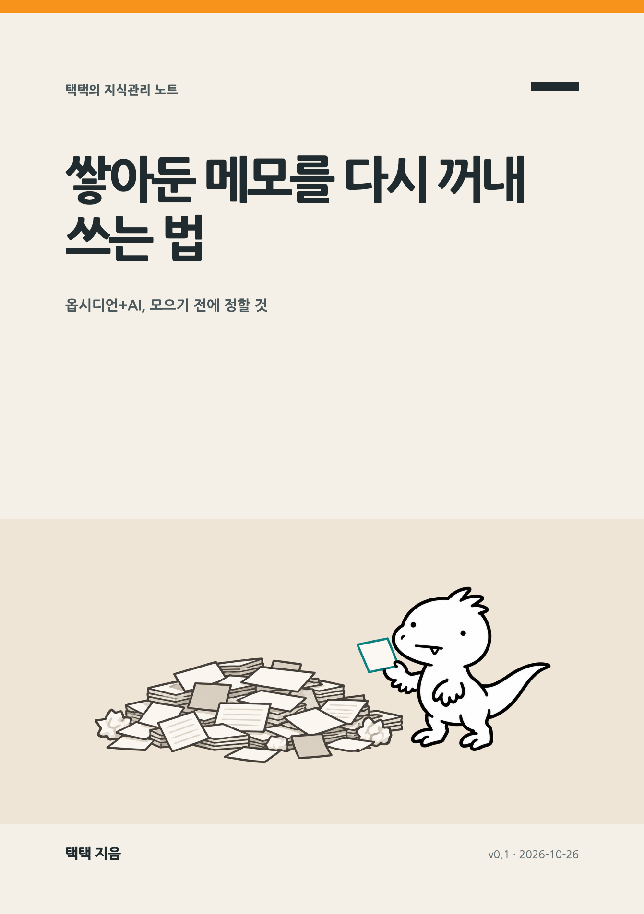

이 책은
옵시디언 볼트에 AI 에이전트·스킬·명령을 200개 넘게 붙였다가 다시 줄인 직장인 택택이, 모으는 법이 아니라 다시 꺼내 쓰는 법을 정리한 책입니다. 저자 볼트의 실제 기록(보인 노트 29건, 쓴 노트 14건, 겹침 0)을 근거로, 원본은 두고 판단만 모으고 결과물에 들어갔는지로 확인하는 방법을 다룹니다.
- 새 자료를 저장할 때 ‘왜 모으나’를 한 줄로 적고 출처 링크를 붙인다
- 그 자료를 기존 노트 두 개와 이유를 적어 연결하고, 짐작한 연결과 확인한 연결을 나눈다
- 그 연결로 업무 메모나 글 개요 하나를 실제로 만들고, 어디에 무엇을 다시 썼는지 적는다
차례
- 들어가며
- 1부 · 왜 다시 안 꺼내게 될까
- 01 · 자동으로 모았더니 안 보게 됐다
- 02 · 지켜보려고 늘렸더니 이어지지 않았다
- 03 · 보인 것과 쓴 것은 다르다
- 2부 · 다시 쓰는 구조
- 04 · 원본은 두고, 판단만 모은다
- 05 · 연결에는 이유가 있어야 한다
- 06 · 넣고, 꺼내고, 고친다
- 3부 · 내 것으로 만들기
- 07 · 결과물 하나에 써먹는다
- 08 · 내 말로 다시 만들어 공개한다
- 09 · 줄이는 것도 운영이다
- 나가며 — 다음 7일
- 부록 A. 활동지 세 장과 작성 예시
- 부록 B. 용어집과 자주 묻는 질문
- 부록 C. 이 책의 숫자를 센 방법
- 출처
본문의 숫자는 저자 볼트 한 곳의 기록이며 효과를 증명하는 통계가 아닙니다. 센 방법은 부록 C에 있습니다. 특정 앱·AI 서비스·증권사를 권하는 책이 아니며, 7장의 증권사 비교는 재사용 기록을 설명하는 예시일 뿐 투자 권유가 아닙니다. 캐릭터 벨로키 그림은 AI 이미지 생성 도구로 만들었고, 도해는 AI와 함께 SVG로 그렸습니다.